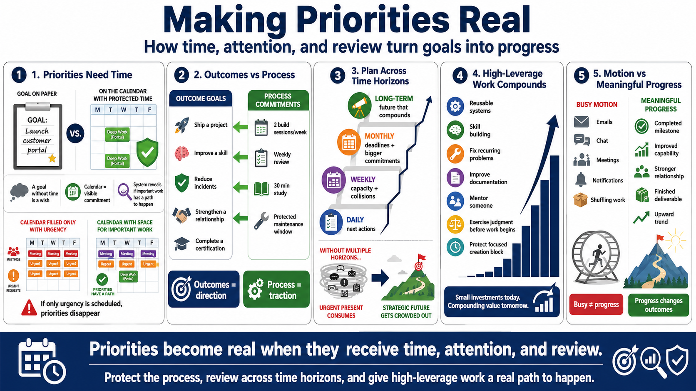

Priorities, Goals, and Time Allocation
Connecting to LMS... Progress: in progress

Narration
Priorities become real when they receive time, attention, and review. A goal written in a document but never reflected on the calendar is mostly a wish. That does not mean every priority must become a rigid block. It means the system should show whether important work has a path to happen. If the calendar only contains meetings and urgent requests, it may not represent the actual priorities.
Outcome goals describe the result: ship the project, improve a skill, reduce incidents, strengthen a relationship, or complete a certification. Process commitments describe the recurring behavior that makes the result more likely: two focused build sessions each week, a weekly review, thirty minutes of study, or a maintenance window that actually stays protected. Outcomes give direction. Process commitments create traction.
Time horizons help balance the near term and the long term. Daily planning helps choose the next actions. Weekly planning exposes collisions and capacity. Monthly planning identifies larger commitments, travel, deadlines, and review points. Long-term planning asks whether current time use is compounding toward a future that matters. Without multiple horizons, the urgent present tends to consume the strategic future.
High-leverage activities produce progress that compounds. They might include designing a reusable process, learning a core skill, fixing a recurring failure, improving documentation, mentoring someone, exercising judgment before work begins, or protecting a focused block for difficult creation. Productive motion can feel satisfying without changing outcomes. Meaningful progress moves the work, the capability, or the relationship in a durable direction.